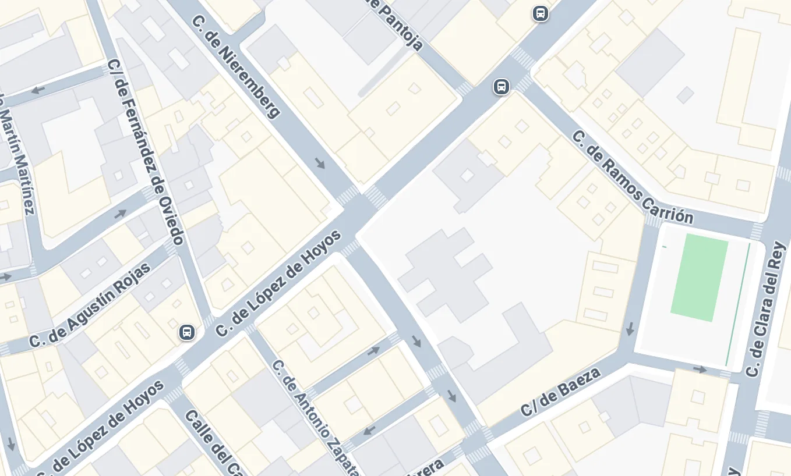

Credits
- Executive Producer
- Richard Hammond
- Producer
- Kevin Bacon
- Director
- Erik Morales
- D.O.P.
- Hoyte van Hoytema
General Call
14:00
- Ready to Shoot
- 15:00
- Estimated End Time
- 02:00
- Agency Call
- 13:30
- Client Call
- 13:30
Locations
-
Multilocalización Calle Cifuentes 30, 19003 Guadalajara, Spain
Nearest hospitalHospital Universitario de Guadalajara
Calle Donante de Sangre, 19002
Guadalajara, Spain (2.1km, Público)

1Weather
31·22 ºC
- Sunrise
- 06:24
- Sunset
- 21:28
General Requirements
Walkie Talkies
Lugar para maquillaje y vestuario
Uso del Piano
Catering
Desayuno listo 07:15 hrs.
Bocata listo a las 10:15 hrs.
Avanzadilla comida lista a las 13:30 hrs. para 10 personas.
Comida unidad principal 15:00 hrs.
Approved By
- Head of Production
- Jimbo
- Assistant Director
- Jose Calero
Por razones de confidencialidad está terminantemente prohibido tomar fotografías ni subir ningún tipo de información a Internet y RRSS acerca del producto y la campaña que rodamos.